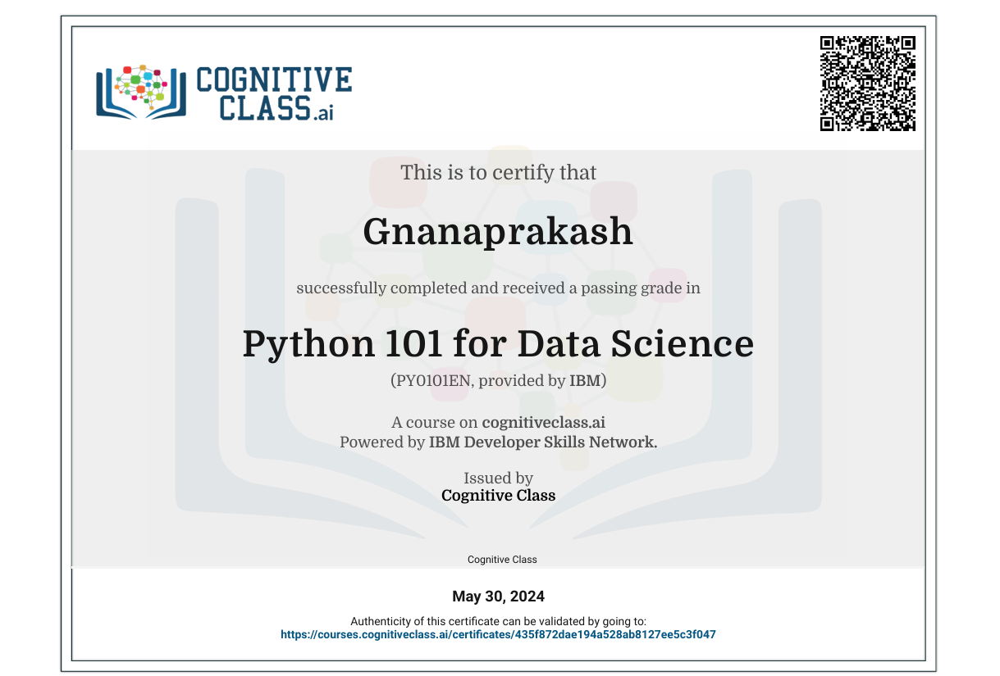

Job Application Form
Created a modern, structured job application form using HTML5 and implemented form validations with a clean UI.
View CodeWeb Developer | Frontend Specialist
Aspiring web developer with a strong foundation in front-end technologies and a passion for creating responsive and user-friendly web applications. Eager to contribute to real-world projects and grow within a dynamic and collaborative team environment. I enjoy turning creative ideas into functional interfaces using HTML, CSS, and JavaScript. I'm constantly learning new tools and frameworks like React to stay ahead in the fast-moving tech world. Whether it's designing a simple landing page or coding dynamic user interactions, I love bringing web experiences to life. My goal is to grow as a full-stack developer.
Created a modern, structured job application form using HTML5 and implemented form validations with a clean UI.
View CodeDeveloped a responsive sign-up form using HTML & CSS, focusing on accessibility and intuitive UX design. Deployed using GitHub Pages.
View CodeA personal portfolio site to showcase web development projects and skills. Built with HTML, CSS, and JavaScript for responsiveness and user engagement.
View CodeResponsive menu page made using HTML & CSS. Features background styling, layout control, and text alignment.
View CodeA responsive and visually styled recipe webpage built with HTML and CSS. Includes clean layout, background design, and well-aligned text for readability.
View CodeA simple and clean static webpage designed to replicate the look and feel of a newspaper article. Built using HTML and CSS, it includes structured headings, paragraphs, and layout styling that mimics real printed media.
View CodeA tribute webpage honoring a notable figure, designed with semantic HTML and clean CSS for structure,images, and aesthetic presentation.
View CodeAn interactive quiz form built using HTML and CSS to collect user responses in a structured format.It includes multiple choice questions with a clean, user-friendly layout suitable for web-based assessments.
View CodeA JavaScript-based to-do list app allowing users to add, mark as complete, and delete tasks. Built using HTML, CSS, and vanilla JS for interactive task management.
View CodeProject: Fitness Tracker App
Developed during a summer internship as part of a team. My role was Frontend Developer. Built responsive UI with HTML, CSS, JavaScript and integrated frontend with backend APIs.
View CodeCertified: June 15, 2025 | Certificate ID: CERT-762791EF

June 6, 2024 - July 11, 2024

Certified: June 16, 2025

Certified: May 30, 2024
Certified: May 28, 2023